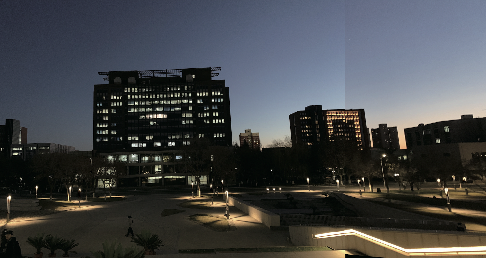

Deep Learning Based Panoramic Image Stitching
Nowadays, various VR applications are in great demand for panoramic images, but the shooting range of conventional cameras is limited. What’s more, there are just a few people do research in this area. However, it has wide application and need settling urgently at present.
To resolve this contradiction, we came up with the ideas of panoramic image stitching technology base on deep learning technology. We make use of cameras from different angles to get images or videos and use deep learning based keypoints splice technology to stitch these image or video into one panorama image or video. Scale-space representation is used within the network to extract keypoints at different levels. Thus, our project is valuable for the current market demand.
The image below is the process of stitching pictures with keypoints matching.

In this research, we mainly use the following methods to achieve panoramic image stitching.
• Optimized from the original manual algorithm, and improved the speed and memory through the deep learning method to realize the real-time stitching of images, videos and real-time panoramic images, which was innovative and aimed at the current shortage and urgently needs to be solved
• Used deep learning methods to build models, used GNN to extract and match keypoints, and used training sets to monitor keypoints, extract descriptors and other operations for training
• Utilized a homography matrix to splice the extracted feature points, then optimized the edge of the stitching result
Following is the panorama image stitching result using our method.

<< BACK